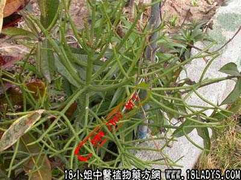

别名：珊瑚枝。
植物名：绿玉树。
生长环境：本品为直立、无刺灌木或小乔木。原产于非洲现分布亚热带及温带。广州花圃或园内有栽植之。
入药部分：枝部的液汁。
采集期：去年。
自采地点：家种。
性味：性寒、味苦涩、不作内服。
功能：杀蚊虫、止痒。
主治、用量和用法：1、癣：将鲜叶枝茎切断，流出奶汁，涂患处；2、痔疮：生用1至2两，煎谁薰洗。
（方歌）光棍杀蚊止痕痒，主创煎水洗兼薰，切开流出奶汁用，涂敷癣疥亦堪珍。
参考资料：本品食之令人发晕，煲鸡蛋能使鸡蛋变黑，有麻醉性。
本文解释权归中药大全，本文地址：https://www.daquan.com/post/1616.html